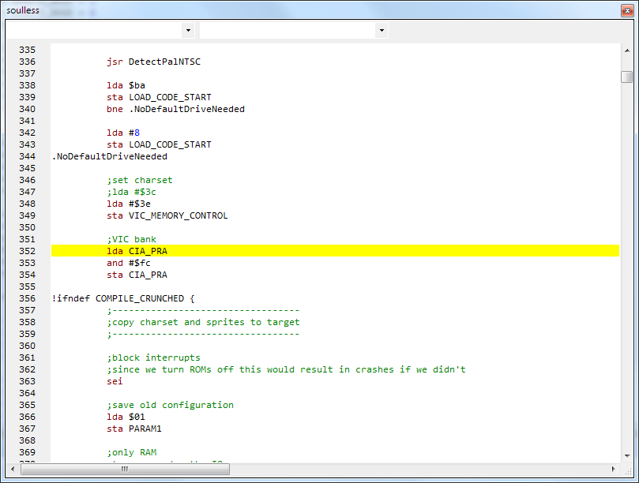
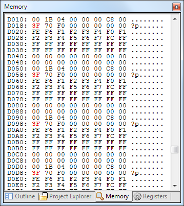

Debugging is a valuable tool. It currently is only possible in conjunction with Vice 2.3 or 2.4.

Prerequisites
You need to have Vice configured as emulator. Debugging is only possible with Vice 2.3 or 2.4.
Make sure that in the tool settings the "Debug" arguments are set to "-remotemonitor -initbreak 0x$(DebugStartAddressHex)"
Start debugging
To start the debugger either:
- Set the debug start address in the project properties to the wanted assembly start address and choose "Debug"
- Set the cursor to the line where you want to break into the debugger and choose "Run to cursor" (context menu or shortcut)
- Set a breakpoint and choose "Debug". Once the breakpoint is hit the emulator will break into the debugger
Breakpoints
C64 Studio supports exec, store and load type breakpoints. Clicking on the margin of a source file will set exec breakpoints. To set store/load breakpoints use the "Breakpoints" tool window.
The "Debug Registers" view shows the current register and CPU flag values.

Values that changed during the last step are marked red.
Registers
X, Y and A show the current value of the register, hex on the left, decimal on the right side
LIN
LIN shows the current line of the raster ray
CYC
CYC shows the current cycle on the current line of the raster ray
$01
$01 shows the current value of byte $01 (CYC shows the current cycle on the current line of the raster ray
PC
PC shows the current location the processor is pointing to. Hex on the left, decimal on the right side
SP
SP shows the current stack pointer. Hex on the left, decimal on the right side
Status
Status displays the various flags of the CPU. NV-BDIZC from left to right are Negative flag, Overflow flag, Expansion Bit (unused), Break flag, Decimal flag, Interrupt flag, Zero flag and Carry flag.
The "Debug Memory" view shows the current view the CPU has on RAM/ROM.

Values that changed during the last step are marked red.